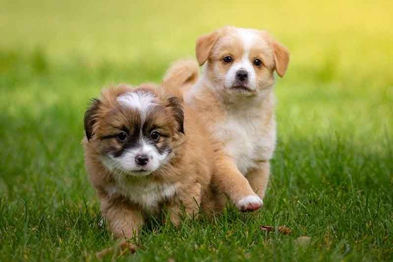

강아지 사회화 꼭 필요해요!
반려동물을 키우는 분이라면 조금이라도 더 나은 삶을 만들어 주고 싶은 게 반려인의 마음이라는 걸 알 텐데요. 그래서 조금 더 행복한 강아지로 만들어주기 위해 많은 노력을 합니다. 여행을 다니고, 다양한 추억거리를 보여주죠. 하지만 반려인의 마음과 달리 외부 세상에 잘 적응하지 못한 모습을 보일 때도 있습니다. 심할 때는 외부 사람이나 동물을 공격하려고 하죠. 아무리 집에서는 사랑스러운 강아지라 할지라도 외부에서 적응하지 못하는 모습을 보인다면, 다른 사람, 동물과 함께 어울리는 방법을 알아야 합니다. 강아지에게 꼭 필요한 사회화! 알아볼게요.
"매일 산책해요"
강아지는 산책하는 것만으로도 사회성을 기를 수 있습니다. 외부 환경이 낯설지 않다는 것을 인지하고 새로운 냄새, 다양한 사람, 동물과 친숙해질 수 있습니다. 특히, 집에만 있던 강아지라면 외부 환경을 어려워할 수 있으므로 천천히 반경을 넓혀 가는 것이 좋습니다.
"어릴 때부터 천천히 준비"
강아지는 태어나서 약 3개월까지 사회화 시기를 거칩니다. 이 시기에 엄마 품에서 젖을 먹고 부모 견으로부터 사회성을 차츰 기르게 되죠. 같이 태어난 형제들과 어울리면서 장난도 치고 관계를 맺는 법을 배웁니다.
이와 함께 필요한 활동이 있다면 장난감으로 놀아주고 외부 환경을 조금씩 접하면서 사회화 과정을 넓혀가는 게 좋습니다.
다만, 어릴 때부터 사회화 형성을 시켜주지 못했다 해도 크게 걱정할 필요는 없는 데요. 사회화에 필요한 훈련으로 이끌어 준다면 충분히 사람, 동물과 잘 어울리는 강아지로 변신할 수 있습니다.
"다양한 반려견과 어울릴 시간을 주세요"
사람도 사람마다 성격이 다르듯 반려견 역시 반려견마다 성격이 모두 다릅니다. 그래서 다양한 반려견이 있는 놀이터에서 사회성을 길러주는 것도 좋은 방법인데요. 서로 냄새를 맡고, 인사하고 또 경계심을 낮추는 방법을 배울 수 있습니다.
단, 외부환경을 낯설어하거나 다른 반려견과의 만남이 불편하다는 것을 여러 가지 신호로 보내고 있다면 더는 스트레스받지 않도록 적절한 선에서 멈추는 것도 중요합니다. 기회는 많으니까 처음부터 너무 무리하지 않도록 해요!
"훈련을 위해서는 간식!"
강아지가 사회성을 기르고, 직접 훈련에 잘 따라오게 하기 위해서는 '간식'이 좋은 방법입니다. 올바른 행동으로 사회성 교육에 잘 따라오고 있다면 간식으로 칭찬하고 보상하는 방식으로 과정을 체계화할 수 있습니다.
사람도 타인과 '잘' 지내기 위해서는 노력이 필요합니다. 강아지 역시 어린 시절 사회화 과정을 제대로 거치지 못했다면, 일련의 과정이 필요할 것입니다. 건강하고 행복한 반려견의 삶을 위해 강아지 사회화는 꼭 필요하답니다.
[출처] 강아지 사회화 꼭 필요해요! ｜ 작성자 우리집 사고뭉치